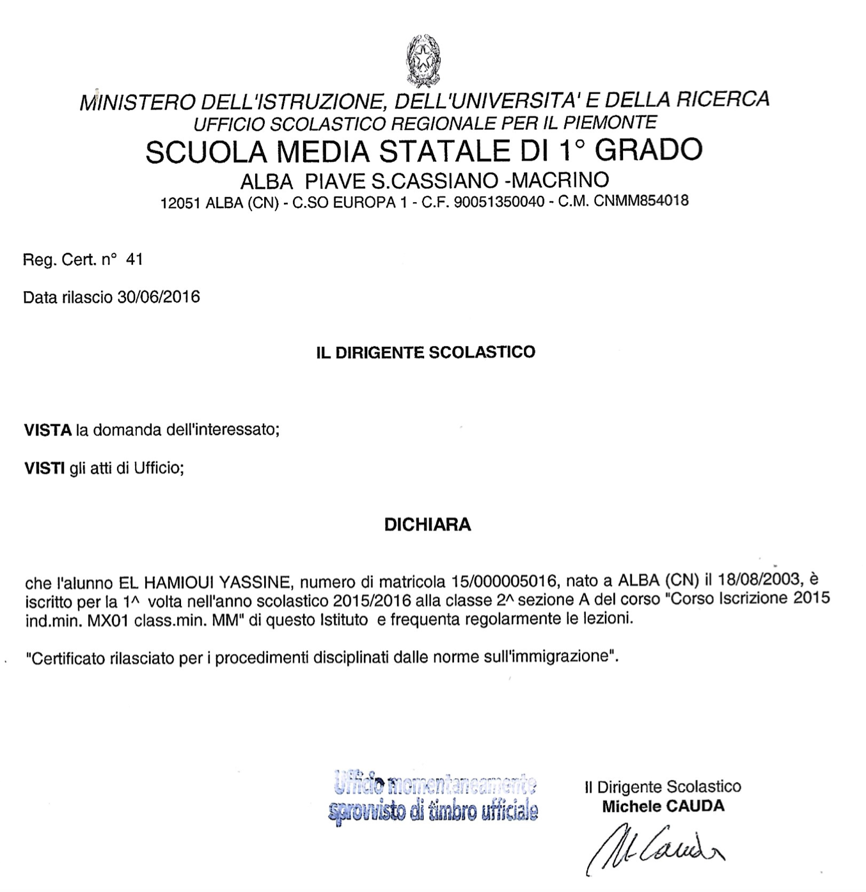

Lycée Raoul Follereau (2019-2021)
- Première et Terminale Technologique, STI2D spécialité de
Système d'Information et Numérique, physique-chimie et mathématiques.
Obtention du Baccalauréat mention assez bien.
Lycée Gustave Courbet (2018-2019)
- Seconde Générale, option Sciences Économique et
sociales, Biotechnologie.
Collège Arthur Rimbaud (2016-2018)
- Obtention du Diplôme National du Brevet.

Scuola Media Macrino, Alba (2014-2016)